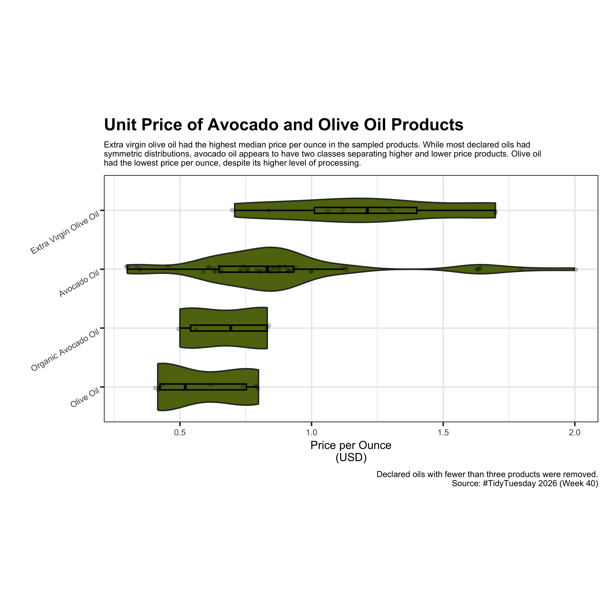

# Packages
library(tidyverse)
# Load data
tuesdata <- tidytuesdayR::tt_load('2026-10-06')
avocado_oil_bottles <- tuesdata$avocado_oil_bottles
avocado_oil_processed_foods <- tuesdata$avocado_oil_processed_foodsAvocado Oil Authenticity
tidytuesday
Link to data: TidyTuesday
Consumers are increasingly paying a premium for products made with avocado oil or olive oil. They deserve to get what they pay for and food manufacturers deserve confidence that the ingredients they purchase from suppliers are authentic.
0. Data
Visualization 1
1. Data Cleaning
Code
mydf <- avocado_oil_processed_foods %>%
mutate(price_per_oz_usd = retail_price_usd/package_size_oz)2. Data Visualization
Code
mydf %>%
group_by(declared_oil) %>%
filter(n() > 3) %>%
mutate(declared_oil = fct_reorder(declared_oil, price_per_oz_usd, .fun='median')) %>%
ggplot(mapping = aes(x = price_per_oz_usd, y = reorder(declared_oil, price_per_oz_usd))) +
geom_violin(width = 0.8, fill = '#5f720f') +
geom_boxplot(width = 1/10, outliers = F, fill = NA, color = 'black', alpha = 0.8) +
geom_point(position = position_jitter(width = 0.01, height = 0.05, seed = 213),
alpha = 0.2, shape = 20) +
labs(title = 'Unit Price of Avocado and Olive Oil Products',
subtitle = str_wrap('Extra virgin olive oil had the highest median price per ounce in the sampled products. While most declared oils had symmetric distributions, avocado oil appears to have two classes separating higher and lower price products. Olive oil had the lowest price per ounce, despite its higher level of processing.',
width = 120),
caption = 'Declared oils with fewer than three products were removed.\nSource: #TidyTuesday 2026 (Week 40)',
x = 'Price per Ounce\n(USD)', y = '') +
theme_bw() +
theme(
plot.title = element_text(size = 12, face = 'bold'),
plot.subtitle = element_text(size = 6),
plot.caption = element_text(size = 6),
plot.background = element_rect(),
axis.text.x = element_text(size = 6),
axis.title.x = element_text(size = 8),
axis.text.y = element_text(angle = 30, size = 6, hjust = 1, vjust = 1),
aspect.ratio = 1/2
)